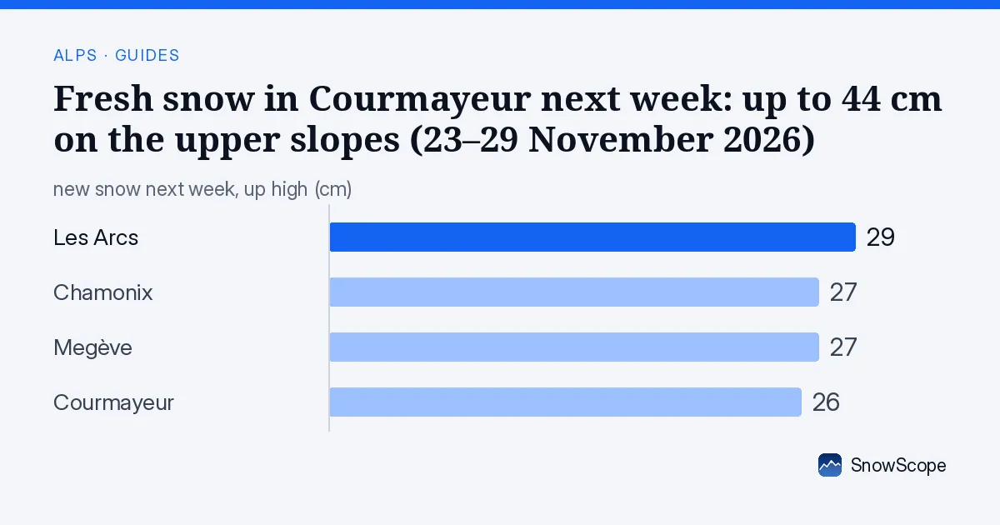

Fresh snow in Courmayeur next week: up to 44 cm on the upper slopes (23–29 November 2026)
Next week (23–29 November), Courmayeur will see fresh snow across the mountain, but the upper slopes win. At 2700 m, the forecast totals 26 cm (range 8–44 cm); mid-mountain around 2000 m gets 22 cm; near the base around 1300 m, only 17 cm will fall.
See the live snow forecast for Courmayeur in the SnowScope appSnow depth, powder alerts and the 3D map, free.

Which days will carry the snow
Four days will do the work. Tuesday 24 November brings 3 cm to the top (up to 6 cm); Wednesday 25 November adds 6 cm (up to 9 cm); Thursday 26 November adds 6 cm (up to 10 cm); and Sunday 29 November closes with 5 cm (up to 8 cm). Saturday 28 November also adds a little: 3 cm (up to 5 cm). The rest of the week is quiet.
Wednesday 25 is the best single day for depth, so if you can only ski one day next week, pick then. Fresh corduroy and softer snow will come together at height.
Height decides what you will find
The upper slopes (around 2700 m) will carry double the snow of the base. This gap matters in early season. The base gets only 17 cm (range 5–28 cm)—real snow, but mild air between storms will soften it into heavy slush on the lower pistes.
Mid-mountain around 2000 m splits the difference at 22 cm (range 7–37 cm). Most skiers will ski through snow that changes character as they descend: firmer at the top, stickier lower down.
How this week builds the picture
The heavy snow arrives this week (17–20 November), not next week. At the top, around 102 cm is forecast (range 87–117 cm). At the base, only 3 cm falls this week. By the time next week's storms begin, the upper mountain will already hold solid cover.
Next week's snow sits on that base layer, which matters more than the size of the second round. Early-season crust and bare patches are less of a worry on the upper runs because of this layering.
Where to ski for the best snow
Go high and go north-facing. The Cresta d'Arp and the Mont Blanc cable car are your height insurance. The north-facing Checrouit runs and the Val Veny side will hold the deepest snow. Treat Courmayeur village and Dolonne as the weak point—lower, warmer, and thinner by mid-week.
If you plan to link valleys or drop to the base, stay high until late morning. The mid-mountain lift systems keep you in better snow for longer.
How certain is the forecast
Medium. At the top, the range is 8–44 cm, so the storm is likely but its size is not settled. The forecast range widens more at the top than lower down, which means high-elevation uncertainty is the main one.
The picture for Courmayeur will be sharper by the weekend. Book flexibly if you can. Plan around the middle value of 26 cm, and keep the high case of 44 cm as a bonus.
How Courmayeur compares
Same week, same measure (top of each resort): Chamonix (18 km away) adds 27 cm; Megève (22 km away) adds 27 cm; Les Arcs (28 km away) adds 29 cm. Courmayeur itself will get 26 cm. The differences are small—within the forecast range.
Courmayeur sits on the Italian side of Mont Blanc, so its snow comes from a different mix of storms than Chamonix. Snow will not decide between these resorts next week. Height, aspect and which lifts are open will.
Tips for skiers
- Fresh snow on a young snowpack: read the regional avalanche bulletin (bollettino valanghe) before any off-piste plan, especially on the Val Veny side and Checrouit.
- Early season: confirm which lifts are open with Courmayeur itself before you travel. The base only gets 17 cm, so valley access depends on the chair lifts.
- Plan around the top's 26 cm for mid-week skiing (24–26 November), and keep the high case of 44 cm as a bonus if the storms are heavier than the middle forecast.
- Mild spells between storms will turn the lowest runs heavy and sticky by Saturday. Time your descent to morning when piste conditions are firmest.
- Check the forecast again on Friday 22 November, when the picture sharpens and you can decide whether Wednesday 25 is worth the journey.
About these numbers
Resort snow depths are the deepest snow on the resort's upper slopes on the date shown; they are estimates for an area, not a measurement at one point. Forecasts can change. Always read the official avalanche bulletin before going off-piste.
Cite this report
For research, teaching or the press: the numbers and charts are free to reuse under CC BY 4.0 with this citation.
SnowScope (2026), Fresh snow in Courmayeur next week: up to 44 cm on the upper slopes (23–29 November 2026), https://snowscope.app/blog/en/2026/11/courmayeur-powder-forecast-next-week-23-29-november-2026.html, accessed 2026-11-16
SnowScope (Atlas Labs). (2026, November 16). Fresh snow in Courmayeur next week: up to 44 cm on the upper slopes (23–29 November 2026). SnowScope snow reports. https://snowscope.app/blog/en/2026/11/courmayeur-powder-forecast-next-week-23-29-november-2026.html
BibTeX
@misc{snowscope2026courmayeurpowderforecast,
author = {{SnowScope (Atlas Labs)}},
title = {Fresh snow in Courmayeur next week: up to 44 cm on the upper slopes (23–29 November 2026)},
year = {2026},
month = nov,
howpublished = {\url{https://snowscope.app/blog/en/2026/11/courmayeur-powder-forecast-next-week-23-29-november-2026.html}},
note = {Published 2026-11-16 11:49 UTC; accessed 2026-11-16}
}· CC BY 4.0 · Methods, data and tools →
Courmayeur: snow and temperature by height, this winter vs last (tools) →
Follow Courmayeur
Free: a message when fresh snow is coming, and the forecast every morning.
More snow reports

96 cm of new snow forecast for Les Arcs over the next three days, with today bringing the heaviest falls.

79 cm new snow forecast for Les Grands Montets from 16–18 November, mostly above 2000 m elevation, based on forecast from 15 November.

Les Contamines gained 145 cm of snow in 72 hours; upper slopes hold 115 cm. More powder is forecast for the weekend.